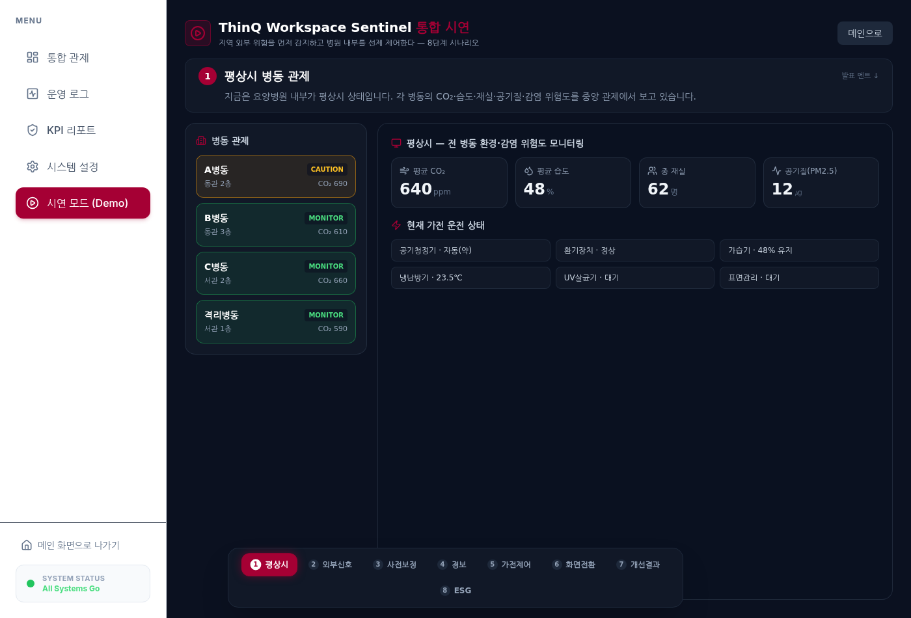

Contents · P0 → P9
BX · CX · DX로 이어지는 하나의 이야기
쉽게 말해 — 왜 이 문제인가 → 누구의 경험인가 → 어떻게 만들고 증명하는가.
BX왜 이 문제인가
P1추진 배경 · 경쟁분석
P2고객 감동 목표
P3데이터 수집 전략
CX누구의 경험인가
P4타깃 · 페르소나
P5핵심 경험 · CAM
P6컨셉 · 전략 캔버스
DX만들고 증명한다
P7설계 · 아키텍처
P8구현 · 효과 검증
P9성과 · 사업성
LG DX School
6주, 기획부터 검증까지 이렇게 진행했습니다
쉽게 말해, 누가·언제·무엇을 했는지 한눈에 — 그리고 모든 단계가 GitHub에 남습니다.
STEP 1 · 발견문제와 데이터를 정의
›
2W2
데이터 수집
VOC 4.8만건·LDA 5토픽
→
STEP 2 · 구축설계에서 통합까지 직접 개발
→
담당
박진영 PM·백엔드|
박진 기획·데이터|
윤재영·정욱현 Edge·통신|
조근범 UI·디자인
→모든 단계가 GitHub에 기록 — 과정이 곧 증빙입니다. 그렇다면, 왜 이 문제인가?
LG DX School
BX · 현위치 (추진 배경)
경쟁분석
LG는 가전으로 이만큼 — 크게 벌지만, 남는 건 얇습니다
쉽게 말해, LG도 글로벌 경쟁사도 가전 ‘판매’로 수십조를 벌지만 — 영업이익률은 모두 한 자릿수입니다.
2024 LG전자 연결 매출 · 역대 최대
87조 7,282억
33조 2,033억H&A 생활가전 매출
사상 첫 30조 돌파 · 가전 9년 연속 성장
가전 매출 → 영업이익≈ 6%
매출 33.2조영업이익 2.0조
글로벌 가전사 이익률 — 전부 한 자릿수
큰 매출, 얇은 마진 = 성숙한 레드오션
5.2%세계 가전시장 연성장률(CAGR) — 성숙시장
※ 영업이익률 기준(Haier는 순이익률) · LG H&A는 매출·이익 IR 파생 근사치 · 시장 CAGR=Grand View Research
출처
LG전자 FY2024 실적 (LG뉴스룸 2025.1)·
Whirlpool·Electrolux·Haier FY2024 공시·
Grand View Research (세계 가전시장)
→가전 ‘판매’로는 이만큼 — 매출은 크고, 마진은 얇습니다. 그럼 ‘구독’은 다를까요?
LG DX School
BX · 연결·구독 생태계
경쟁분석
가전은 이미 ‘연결’되고, ‘구독’으로 돈이 됩니다 — 둘 다 레드오션
쉽게 말해, 묶는 기술도 구독 매출도 이미 무르익었습니다 — 빅테크부터 글로벌 IoT 플랫폼까지 다 들어와 있습니다.
2025 상반기 1조 598억 · 반기 첫 1조
2030 목표 6조 · 약 3배
한 앱으로 묶이는 멀티벤더 생태계 — 빅테크·IoT 플랫폼 다 진입
LGThinQ ON
SSmartThings
Apple Home
GGoogle Home
aAmazon Alexa
MMatter 표준
C코웨이 IoCare
MiXiaomi Home
AqAqara
TTuya IoT
ThinQ ON·SmartThings·Matter로 LG·삼성·코웨이가 한 앱에서 상호 제어 — 통합은 이미 완성 단계.
3.5억
SmartThings 글로벌 가입자 (국내 2,000만)
3,800+
파트너 300곳 · 인증 연동 기기
실증
우리 데모도 코웨이 + 삼성을 한 코드로 제어 — 멀티벤더 통합은 이미 ‘실증’됨
출처
LG전자 반기보고서·머니투데이(2025.8) 구독 매출 추이·
삼성전자 SmartThings 3.5억 가입자(2024.9, 뉴스룸/ZDNet)·
국내 2,000만·연동률 삼성 뉴스룸(2025.1)
→연결도, 구독도 레드오션. 그럼 다음 수익은? — 이미 깔린 가전 위 ‘SaaS’입니다.
LG DX School
BX · 다음 수익 구조
레드오션 → 블루오션
그래서 다음은 — 이미 깔린 가전 위 ‘SaaS’
쉽게 말해, 같은 고객·같은 가전이라도 — 소프트웨어 구독은 마진도, 성장도 ‘다른 게임’입니다.
마진 — 같은 매출, 다른 게임
※ 가전=영업이익률 vs SaaS=매출총이익률(P&L 항목 상이) · KeyBanc 2024 SaaS Survey
LG 스스로도 전환 중 · Vision 2030
2030년 영업이익 ~75%를 B2B·플랫폼·신사업에서 · webOS 1조+ 투자
조주완 CEO ‘Triple-7’ (KED Global 2023)
출처
KeyBanc 2024 SaaS Survey·
Grand View Research (스마트홈 시장)·
LG Vision 2030 ‘Triple-7’ (KED Global 2023)
→그럼 구체적으로 ‘무슨 SaaS’인가 — 누구도 손대지 않은 빈 영역, ‘안전’입니다.
LG DX School
P1BX · 시장은 부품만, 통합은 공백
경쟁분석 · 데이터
시장엔 ‘부품’만 있습니다 — ‘통합·증빙’은 데이터로도 비어 있습니다
쉽게 말해, 경쟁 언급 8,888건을 뜯어보니 부품은 넘치는데 잇는 사람이 없습니다.
통합 솔루션 시그널 — 사실상 0
체온 + 공기 통합 신호0.05% · 4건
보호자 앱 연계0.06% · 5건
지역 경보 연동0.11% · 10건
감염관리료 자동 증빙0건
부품 언급 vs 통합 언급
176배
부품 3,356건 · 통합 19건 — 잇는 사람이 없다
브랜드 지배력도 약함 · 언급 244 / 8,888 = 2.75%
삼성 118
KT 35
SK 32
LG 29
뷰노 16
선점 안 된 시장 = LG가 ‘통합 안전’ 표준을 가져올 자리.
출처
경쟁 솔루션 키워드 12종 · 8,888건 VOC 시그널 분석 (네이버·YouTube)·
본 저장소 재현: 경쟁 공기청정기·스마트병원 모니터링 28건(전부 환자활력·살균) 중 체온+공기·보호자앱·자동증빙 통합 시그널 0건
→부품은 많고 통합은 0 — 그럼 이 빈칸에 무엇을 채울까요?
LG DX School
P1BX · 차별점 고민 (언노운 한 수)
창의 핵심
그래서 고민했습니다 — 이 묶인 가전에 무엇을 ‘더’ 할까?
쉽게 말해, 남들이 다 간 ‘편의’ 말고 — 같은 가전으로 비어 있는 ‘안전’ 축을 채우기로 했습니다.
기존 · 편의 최적화
사용자 편의
· 야간 설거지 예약
· 비 오는 날 수건 건조
· 음성 제어 · 선호 학습
ThinQ ON · SmartThings
우리 · 안전 자동화
비의료적 안전
· 이미 깔린 센서 활용
· 우리가 만든 외부 역학 데이터
· 공간에 안전을 자동 부가
non-medical safety
정직
진단·처방이 아닙니다 = 의료기기 규제·과대포장 회피. 환경위험·재호흡률·PoI·대응시간을 낮추는 것입니다.
→그런데 ‘가전으로 안전을’이 말뿐일까요? 이미 증명된 근거가 있습니다.
LG DX School
P1BX · 근거 (가전 → 감염 저감)
신뢰성
‘가전으로 감염을 줄인다’는 이미 증명됐습니다
쉽게 말해, 공기청정·환기는 공기 중 바이러스와 감염 확률을 실제로 낮춥니다 — 논문과 병원 실측으로요.
병원 실측
거의 0
HEPA 가동 시 공기 중 SARS-CoV-2 검출 사라짐
코로나 병동에서 필터 끈 날엔 검출, 켠 날엔 미검출.
英 케임브리지 Addenbrooke’s 병원 연구 (2021)
국내 논문
농도 ↓
교실용 공기청정기로 공기 중 바이러스 저감
CADR 기반으로 실내 바이러스 농도 저감 효과 정량 분석.
한국대기환경학회지 36(6), 2020
학술 모델
PoI ↓
환기·공기 위생이 감염 확률을 낮춘다
Wells–Riley 모델 — 환기량↑ → 감염 확률↓ (학계 정설).
Rudnick–Milton 2003 · REHVA
그래서
가전은 이미 감염 위험을 줄일 수 있다 — 다만 지금은 ‘위험이 닥친 뒤’에 켜집니다.
→ 우리는 ‘미리 예측해 먼저 켜는’ 시스템을 기획했습니다.
출처
Univ. of Cambridge / NIHR Cambridge BRC, HEPA 공기청정기 병동 연구 (2021)·
한국대기환경학회지 「학교용 공기청정기 적용성 분석」 36(6):832–840, 2020·
Rudnick & Milton, Indoor Air 2003 (Wells–Riley)
→그렇다면 이 ‘선제 예측’이 가장 절실한 공간은 어디일까요?
LG DX School
가장 절박한 공간 — 요양병원, 그리고 우리만의 5개 ✓
쉽게 말해, 위험·사례·제도가 모두 가리키는 곳이 요양병원이고, 경쟁표에서 우리만 다섯 칸이 켜집니다.
위험 3요소
고위험군 장시간 체류 · 야간 인력공백 · 집단감염 치명
58명확진 · 사망 2
부산 해뜨락요양병원 집단감염 (2020.11) · 언론보도
1 / 4
코로나 사망 4명 중 1명 감염취약시설 · KDCA
790·1,320·2,180
감염예방관리료 원/일·인 · 2023.7 신설 → 2024.10 등급차등
기준
글로벌 BMS
Honeywell·JCI
국내 공기질
Sentinel
→남들이 편의에 간 사이 비어 있던 건 ‘안전 자동화’ — 외부 데이터로 그 공백을 메웁니다.
LG DX School
수동적 사후 대응을, 선제적 자동 대응으로
쉽게 말해, 사람이 일일이 챙기던 일을 공간이 스스로 하도록 바꿉니다.
Before · 감각·수동·사후
인지답답할 때 비로소
대응사람이 직접 조작
기록수기 일지 · 누락
증빙사실상 불가
After · 데이터·자동·선제
인지위험 사전 인지
대응가전 자동 가동
기록초 단위 자동 로깅
증빙리포트 자동 생성
집중 과제지역 감염이 병원에 닿기 전, 공간을 자동으로 준비시킨다
간호사시설원장보호자
→이 목표를 뒷받침할 근거는 어떻게 모았을까요?
LG DX School
P3BX · 데이터 수집 전략
체계성 · 신뢰성
정성과 정량, 두 축으로 모았습니다
쉽게 말해, ‘왜 풀어야 하나(정성)’와 ‘위험을 어떻게 계산하나(정량)’를 나눠 수집했습니다.
정성 · VOC 텍스트 마이닝
48,514건 수집
4채널 · 57키워드
노이즈 필터 후 28,679건 분석
· 네이버 뉴스·블로그·카페·지식iN + YouTube
· Kiwi 형태소(NNG·NNP) → LDA 토픽 모델링
· 시설장 11,106 · 종사자 9,494 · 가족 8,545
3 페르소나 raw 29,145 + 경쟁 8,888 + 정책 10,481 · 스크립트·프리셋 공개로 재현 가능
정량 · 5 Layer 외부 + 실내 센서
실내 센서
코웨이 실측 PM·온습도 + CO₂(공청기·가스 트리거 보조, 표준센서 SCD41 한 줄 교체)
→그런데 이 분석이 ‘자의적이지 않다’는 걸 어떻게 증명할까요 — 방법론으로 보여드립니다.
LG DX School
P3+BX · 분석 방법론 (Show your work)
신뢰성
주장이 아니라 재현됩니다 — 크롤러·데이터·코드 공개
쉽게 말해, 저장소의 스크립트를 그대로 돌리면 같은 숫자가 나옵니다 (재현 샘플 N=186 · 13키워드 · 5페르소나, 전체 48,514건 동일 패턴).
① 토픽 자동 분리
LDA 5토픽 — 데이터가 스스로
T1 냄새·욕창·생활·간병·환경
T2 인건비·폐업·경영난·수가
T3 면회·보호자·치매·자유·제한
T4 감염·집단·학대·취약·대응
T5 야간·근무·수당·처우·이직
5토픽이 페르소나로 그대로 갈라짐 · Perplexity 스캔(n2-10) 공개
② 감정 측정
도메인 룰 사전
일반 한국어 BERT는 요양 도메인 약함 → 해석·정당화 가능한 룰 사전 채택
③ 재현된 부정도
키워드별 실측 (N=186)
집단감염·학대·냄새·욕창100%
야간근무97%
이직·처우93%
스크립트 재실행 시 동일 — 주장이 아닌 측정값.
방법
Kiwi 형태소(NNG·NNP) · CountVectorizer(max_features 500, min_df 3) · LDA(n=5, random_state 42)·
감정 룰 사전(부정 37·긍정 16)·
재현 — scripts/cx/run.py · data/nursing/raw.csv · lexicon.py (저장소 공개)
→이 검증된 데이터로 ‘누구를’ ‘어떤 Pain’을 풀지 좁혀갑니다.
LG DX School
P4CX · 타깃 · 페르소나
고객 핵심포인트
1차 교두보 = 전국 요양병원 1,342개소
쉽게 말해, 구매자·운영자·실사용자·수혜자가 모두 다른 욕구를 가집니다.
→이들이 실제 겪는 경험을 한 장에 모으면 결론이 보입니다.
LG DX School
네 Pain은 모두 한 곳으로 수렴합니다
쉽게 말해, 인지 → 현재 행동 → Pain 정점 → 센티넬 개입. 결론은 ‘실시간 확인 + 대응 증빙의 부재’.
인지
위험을 수치로 알 수 없음 — 답답함·냄새 같은 감각에 의존
현재 행동
사람이 직접 창문·가전 조작, 수기로 기록 — 야간엔 누락
Pain 정점
집단감염·민원 발생 후에야 인지 — 증빙할 근거가 없음
Sentinel 개입
위험 사전 인지 → 가전 자동 대응 → 초 단위 증빙 자동 기록
CAM 우상단 = 기회영역 (빈도↑ · 부정도↑)
‘실시간 확인 + 대응 증빙 부재’로 수렴
→이 수렴점을 푸는 컨셉을 한 장으로 정리합니다.
LG DX School
P6CX · 컨셉 · 전략 캔버스
논리 · 창의 · 충실
공간이 사람보다 먼저 반응한다 — 증빙이 자동으로 남는다
쉽게 말해, 논리(인과)·창의(3대 전환)·충실(전략 캔버스)을 한 장에 담았습니다.
논리외부역학→센서→Wells–Riley→가전→안심
창의 · 혁신성 Fun = First · Unique · New
예측을 판다→면책 근거New
쾌적함→법적 증빙Unique
새 가전→이미 깔린 가전 묶기First
충실 · 전략 캔버스
가치제안선제 안전 + 자동 증빙
타겟요양병원(교두보) → IAQ 확장
활동외부역학 융합·가전 오케스트레이션
자원센서·어댑터·위험 엔진
수익원SaaS 89 · 129 · 399만원/월
해자외부역학·증빙 자동화
시연75초 — 인지→대응→증빙→안심
→이 컨셉을 실제로 어떻게 설계했는지 보겠습니다.
LG DX School
지금 돌고 있는 실제 설계도 — 4 Stage
쉽게 말해, 수집 → 처리 → 분석 → 대응·증빙. 분석 단계가 우리만의 핵심입니다.
→
처리
Store
TimescaleDB · Redis
→
분석 · 핵심
Compute
UIS 외부역학 · REHVA PoI · 5-Tier(운영 등급)
→
요구사항 · FR 1–8
외부경보·센서수집·PoI·5Tier·차등제어·승인·RBAC·증빙
화면 · 6
로그인·간호사·시설·경영·추이·보호자 PWA
분석 3축
정성 LDA · PoI 산출 · 외부신호 융합
→설계는 머릿속이 아니라 실제 동작합니다. 직접 만들어 효과로 증명합니다.
LG DX School
P7DX · 시스템 아키텍처 (실제 설계 도면)
구현 충실성 · 최대 배점
머릿속이 아닙니다 — 실제로 돌고 있는 시스템 아키텍처
수집 → 위험 계산·예측 → ThinQ 가전 대응 → 증빙·시각화 · 맨 아래 실제 기술 스택까지 설계되어 동작합니다.
LG DX School
P7DX · 설계 산출물 5종 (실문서)
구현 충실성 · 최대 배점
요약이 아니라 ‘문서’로 — 설계 산출물 5종 전부 실재
쉽게 말해, 요구사항·아키텍처·화면·DB·분석정의서가 코드/스키마로 실제 존재합니다.
① 요구사항정의서 · FR↔API
FR1외부경보 수집/external/signals
FR2위험 부스트/risk-boost
FR3센서 수집/reading·/live
FR4PoI·5Tier 산출/risk-series
FR5차등 가전제어/control·/plan
FR6승인 거버넌스/approve
FR7RBAC 권한users.role
FR8증빙 리포트/report·/kpi
8개 기능 = 30+ 실엔드포인트로 동작
② DB 설계서 · ERD · 마이그레이션 5
sitesspacesusers(RBAC)readingsrisk_scorescontrol_log
TimescaleDB · 001~005 버전관리 · 실 시드 데이터 포함
③ 화면설계서 · 9 화면
관제 통합 대시보드 /dashboard
로그 운영 로그 · KPI 리포트
설정 시스템 설정 · 데모 모드
PWA 보호자 home·ward·alerts·login
④ 아키텍처=별도 도면(앞장) · ⑤ 빅데이터 분석정의서=방법론장
→문서로 끝이 아닙니다 — 이 설계가 지금 실제로 돌아갑니다.
LG DX School
P7+DX · 실제 작동 제품 (시연 화면)
구현 충실성 · 최대 배점
모형이 아니라, 지금 돌아가는 통합 관제 화면입니다
쉽게 말해, 화면 6개·기능 8개가 실제 동작 — 아래 8단계 시나리오를 라이브로 시연합니다.
ThinQ Workspace Sentinel · 통합 관제 (live)

라이브 시연 · 8단계 시나리오
1평상시 관제›2외부신호 포착
3사전 보정›4경보 발령
5가전 자동제어›6역할별 화면
7개선 결과›8ESG 리포트
6
실동작 화면 (관제·로그·KPI·설정·보호자 PWA)
멀티벤더 실증 — 코웨이·삼성 실기기를 한 코드로 제어 (LG ThinQ는 어댑터 한 줄 교체)
→‘돌아간다’를 넘어 ‘효과가 있나’ — 반사실로 검증합니다.
LG DX School
P8DX · DX Key Accelerator 구현 + 효과 검증
DX Key Accelerator 구현
실제로 작동하고, 반사실로 효과를 검증했습니다
쉽게 말해, 센서가 정상이어도 외부 신호만으로 가전이 미리 돕니다 — 그게 사전 예방입니다.
실제 작동
외부 RED → tier 점프 → 코웨이 공기청정기 실제 TURBO (센서 정상에도 = 사전 예방)
5-Tier 프로토콜 운영용 등급 · 임상 아님
Safe <0.2LowModHighCritical ≥0.8
반사실 예방검증 · ON vs OFF · 5 시나리오
누적 감염노출 (모델)
35.3→2.4
−93.5%
단, 최고 PoI는 14%만 ↓ — 터진 뒤엔 늦습니다. 그래서 선제 경보가 핵심입니다.
정직: 모든 수치는 모델 기준이며, 실제 감염자 감소가 아닙니다.
→그래서 무엇이 남는가 — 성과 지표와 사업성으로 닫습니다.
LG DX School
P8+DX · 과학적 근거 (논문 검증)
근거 = 동료심사 논문
지어낸 수치가 아닙니다 — 동료심사 논문 위에 세웠습니다
쉽게 말해, CO₂(재호흡률)로 감염위험을 ‘추정’하고, 가전제어로 ‘낮춥니다’ — 세 단계 모두 논문 근거.
① 이론재호흡률 = 감염위험
재호흡 분율 f=(C−Cₐ)/C₀ — 환기량 없이 CO₂만으로 공기감염 위험 추정
Rudnick & Milton, Indoor Air 2003
초과 CO₂에 비례해 상대 감염위험 ↑
Peng & Jimenez, ES&T Lett. 2021 · Wells–Riley(Riley 1978)
→ 우리 PoI·CO₂ 트리거의 이론적 backbone
② 실측환기·정화 = 감염 저감
≥74%상대 감염위험 ↓
기계환기 교실(1만+) · 10 L/s·인 초과 시 ≥80%
Buonanno·Ricolfi, Front. Public Health 2022 (관찰코호트)
공기정화 = 환기와 수학적으로 동등
Bazant & Bush, PNAS 2021 · 병동 HEPA: 공기중 바이러스 검출→불검출(Conway Morris, CID 2022)
→ 공기청정기 자동제어가 위험을 낮춘다는 실증
③ 선행외부신호 = 선제 대응
외부 디지털·환경 신호가 임상 건수를 선행
검색트렌드 ~1–2주(Ginsberg, Nature 2009) · 하수 ~4–7일
정직 ⚠ 우리 ‘15~43일’은 자체 데이터
문헌 선행은 수일~2주 — 15~43일은 논문 인용 아님
→ 선제성의 타당성 + 한계를 함께 명시
기준치
CO₂ ≤800 ppm(경보 1000) · 환기 ≥5 ACH
REHVA·WHO·CDC (KDCA 아님)
정직: 단일 CO₂ 임계로 ‘감염 예방’ 단정 불가 — 안전 농도는 환경별 >100배 차(Peng·Jimenez) → ‘상대위험’으로만
LG DX School
우기지 않습니다 — 지표로 측정하고, 가전으로 번집니다
쉽게 말해, 성과는 자동 집계 지표로, 사업성은 SaaS가 아니라 가전 풀스루로 증명합니다.
DX운영
자동제어 0 → 주 50건+
MTTR < 5초
외부 선행 15~43일
누적 노출 −93%
CX경험 · PoC 목표
문의 −30%
앱 열람 60%
수기 기록 −50%
CO₂ 1,500→800 · PM 35→12 · 알림 5분
ROI경영
자동 증빙 100%
병원 회수 3.2개월
LTV:CAC 4.8 : 1
사업성 · 정직
SaaS 기본 21.8억/년 = wedge→
본질 = 가전 pull-through 병원당 1.0억 · LG 총 41.8억/년·
수가차액 8,447만원/년/병원
산정 기준 · 200병상 가정 — 감염예방관리료 등급 차액(심평원 수가표) + 가전 풀스루(구독 23종) + 집단감염 1건 손실 회피. 가격은 ‘리스크 보험’으로 역산 · 파일럿으로 WTP 검증 예정.
→요양병원을 교두보로 병원·학교·오피스 실내공기질까지 — 다음은 확장입니다.
LG DX School
P9+DX · 사업화 로드맵 + 정부사업 수익
사업성 · B2G 지불근거
‘효능’이 아니라 ‘수가’로 — 도입 즉시 매월 수익
쉽게 말해, 감염관리 활동을 자동 증빙해 수가를 채웁니다. 정책 1만 481건에서 실제 매칭한 수익 경로입니다.
단기 · 직접 수가 (즉시)
감염예방·관리료 등급제
언급 254건 · 입원환자 1일당 매월 매출 · 2024.10~
중기 · 간접 가산
인증평가 · 의료질평가
언급 286건 · 환경·위생 자동 증빙 = 등급 가산
장기 · 정부 공모
권역책임의료기관
총사업 742억 · 중증치료시설 확충 항목 응모
M1–3 · 검증
파일럿 3곳 LOI · 식약처 등급 사전질의 · 감염예방관리료 산정요건 매핑
M4–6 · MVP
위험도 엔진 학습 · 질병청 API 연동 · 인증평가 필수항목 자동 증빙
M7–9 · 파일럿
3곳 동시 운영 · 거짓양성률 측정 · NPS·등급 변화 추적
M10–12 · 확장
권역책임의료기관 공모(742억) · 식약처 사전질의(비의료 유지) · 파일럿 확대 영업
정직
수요자 MOU는 아직 0건 — 파일럿 LOI가 다음 마일스톤. 가격은 ‘집단감염 1건 손실 회피’ 리스크 보험으로 역산.
출처
정책·지원금 VOC 10,481건 사업명 매칭 · 심평원 감염예방관리료 등급제(2024.10) · 보건복지부 권역책임의료기관 742억(2026)
LG DX School
ThinQ Workspace Sentinel
사람이 24시간 지킬 수 없는 공간을,
데이터와 가전이 먼저 반응하는 공간으로.
선행 예측
무 BMS
자율 제어
안전 Fallback
자동 증빙
감사합니다
Q&A · 팀 5분 대기조
LG DX School